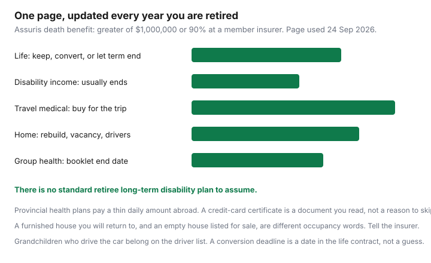

Insurance · Canada
Retirement Insurance Review in Canada: What to Keep, Cut, and Replace
Retirement changes the insurance that made sense while a paycheque supported other people. Households keep paying for a term policy whose job is finished, assume a disability plan still exists, and skip the travel medical policy that provincial health care will not provide. This page is a keep, cut, or replace map: life insurance, disability, travel medical, the house, group benefits, and a one-page list you update every year. It is for people nearing retirement and for people in the first years after. It is not a product ranking.
Disclosure: Travel medical policies and term life quote portals are offer types when a trip is booked or a remaining dependant need has a dollar amount. Saving Optimizer may earn a commission if those links are added later. We do not claim a partnership with any insurer. Education only. Assuris figures are from Assuris, used 24 Sep 2026.
Key takeaways
- Keep life insurance that a dependant or a written agreement still needs. Let term end when that need is gone. Ask for any conversion deadline before the expiry date.
- Disability income usually ends with work. Do not budget a retiree long-term disability cheque. It is not a standard product.
- Travel medical is the policy retirement adds. Provincial daily caps abroad are small. Read a credit-card certificate before you rely on it.
- Downsizing changes rebuild cost. A long winter away, and an empty house for sale, are occupancy facts you tell the insurer. Grandchildren who drive are listed drivers.
- Group health lasts until the booklet’s end date, which may be retirement or 65. Provincial drug programs for seniors are a separate application.
- One page, once a year: each policy, keep or cut or replace, the renewal date, and who you call.
Life insurance: drop, convert, or keep a small final-expense layer
The needs worksheet still works after you retire. The inputs change. If no one loses income when you die, and no separation agreement or loan requires a policy, the term that protected a mortgage and children can expire. Cancelling in the last year of a term you no longer need is a finished decision. Cancelling a policy that names an irrevocable beneficiary, or that a court order requires, is not. The separation guide is that constraint.
- Let it end. Diary the expiry. Premiums on a ten-year term jump if you renew at the attained age. If you will not renew, say so before the insurer drafts the new price.
- Convert, if the contract allows and someone still depends on you. Conversion privileges are contractual. They have a deadline, often before the term ends and before a maximum age printed in the policy. Ask for that date in writing. Compare the converted permanent premium with a new term on the same death benefit if you are still insurable. The term-versus-whole-life guide is that comparison. A conversion is not an investment plan.
- A small final-expense layer. Funeral and last bills are a cash need if a spouse would otherwise pay them from a registered account at a bad moment. A modest permanent policy can be the tool. It is optional. Price it against the savings you already have. Assuris, for a member life insurer, protects the death benefit for the greater of $1,000,000 or 90 percent if the member fails. That protection is not a reason to buy a larger policy.
- Group life. The group-life guide says a multiple of salary ends with the job. Confirm the last day. A conversion window on group life is short. Miss it and the option is gone.

Disability cover usually ends with work—do not assume retiree LTD
Long-term disability replaces part of a paycheque when you cannot work. Retirement is the end of that paycheque, so the product usually ends with it. Group plans and personal policies are written to an age, often 65, and they require you to be employed, or at least not retired, when the disability starts. Read your booklet for the age and for the definition of retirement. The disability guide is the working-years version: elimination period, the occupation test, and tax. It is not a promise of a retiree plan.
There is no standard product called retiree long-term disability. An employer booklet that continues a benefit is a gift of that contract, not a national rule. CPP disability is for people under 65 with a severe and prolonged disability. The 2026 maximum for a new benefit is on the disability guide. It is not paid because you chose to retire. After 65, income is CPP retirement, Old Age Security, pensions, and savings. Insurance does not replicate those.
If you are not yet retired and your health is uncertain, the decision to leave work is also a disability decision. Ask human resources whether a claim can be opened before the retirement date, and get the answer in writing. This page cannot open that claim for you.
Travel medical becomes the new must-have for snowbirds
Provincial health insurance pays a limited daily amount outside Canada, and it does not evacuate you. The provincial-gap guide has the OHIP, Alberta, British Columbia, and Quebec figures. The snowbird guide has residency clocks: how long you can be away before the provincial plan itself is at risk. Buy travel medical for the trip length you will actually take, and disclose pre-existing conditions the application asks about. A stability period is a contract term. Guessing the number of days since a medication change is how a claim is denied.
A credit-card certificate can be part of the stack. The certificate guide is age, trip length, who had to pay with the card, and stability. It is not a ranking of cards, and it is not a reason to skip a policy when the certificate stops at 15 days and you are going for 90. Travel medical policies are the offer type for this gap. Quote the trip you are taking. A multi-trip annual plan can be cheaper than three single trips, or it can be worse if the day cap is shorter than your longest winter stay. Read the cap.
An RV policy’s emergency-accommodation limit, on the RV guide, is a place to sleep while the unit is repaired. It is not hospital care.
Home: downsizing, snowbird vacancy, and grandkids as occasional drivers
The house changes in three ways that are insurance facts.
- Downsizing. A smaller home has a different rebuild cost and fewer contents. Update the dwelling limit with the replacement-cost method. Do not leave a five-bedroom limit on a bungalow, and do not cut the limit to the new purchase price if rebuild would cost more. Water endorsements move with the new address. A former rental suite that no longer exists should come off the policy. The landlord guide is the opposite move, if you keep the old house and rent it.
- A long absence. A furnished home you will return to is often unoccupied, with a day limit in the wording. An empty house listed for sale is often vacant, and cover can shrink after a stated number of days unless the insurer agrees. Tell them which one you are doing, before you leave and before the last piece of furniture goes. The home-claim guide is why an unreported change becomes a coverage argument. Ask a neighbour to check heat if the wording requires the home to be inspected. Write down that you asked.
- Grandchildren and the car. A licensed person who drives your car has to be on the policy, as occasional only if that is true. A week of school runs every day is not occasional. The young-driver guide is the rating. Notice comes before the keys. A grandchild who does not live with you can still be a driver the insurer wants named for the visits that are regular.
Group benefits bridge until 65 (cross-link mindset to benefits gap post)
Treat the workplace booklet as a bridge with a published end, not as a lifetime plan. Some employers cover health and dental until retirement. Some continue a retiree plan to 65, or for life, with a reduced formulary. The only honest step is to ask for the end date and the retiree booklet before you give notice.
Line that date up with two other starts. Provincial drug programs for seniors often become available at 65, with premiums, deductibles, or income tests that differ by province. Apply on the province’s timetable. Do not assume the workplace drug card quietly becomes the provincial one. And if a spouse still works, the coordination guide is the order of payment while both plans exist. When yours ends, their plan may become primary. Tell both administrators the date.
Dental, glasses, and paramedical visits that the group plan paid are the gap. A private health plan can fill some of it. Read the waiting period, the annual maximum, and whether pre-existing conditions are excluded. Buy it before the group plan stops if the waiting period would otherwise leave you bare. The disability guide and the group-life guide are the income and the death-benefit versions of the same end date. Read them together. A health spending account balance often expires. Submit receipts before the last day of the plan year.
One-page retirement insurance map updated each year
Do this in the same 45-day sitting as the annual review. One row per contract. Update it when you book a trip, when a grandchild gets a licence, and when a group plan ends.
| Contract | Keep, cut, or replace | Date and the call |
|---|---|---|
| Life | Who still needs the death benefit, the amount, and whether a conversion date is coming. | Expiry or renewal. Beneficiary name matches your current intention and any agreement. |
| Disability | Confirm it has ended, or the last day it can start. Remove the premium from the budget when it ends. | The booklet’s age. Human resources if you are mid-claim. |
| Travel medical | Trip length, stability, and whether a card certificate covers that length. | Buy before departure. Provincial residency days left this year. |
| Home and auto | Rebuild limit, water endorsements, absence or vacancy, listed drivers, kilometres. | Renewal dates. Insurer phone. No bare day if you move. |
| Group health | End date, what stops, what the province may cover at 65, what you will buy. | Administrator. Submit leftover spending-account receipts. |
Assuris monthly income protection, the greater of $5,000 or 90 percent at a member insurer, matters for a disability or annuity contract you still hold. It does not create a retiree disability plan you never bought. The map is finished when every row has a date and a name.
Sources & date stamps
- Financial Consumer Agency of Canada, getting insurance and life insurance — match the product to the need. Used 24 Sep 2026.
- Assuris, how you are protected — death benefit the greater of $1,000,000 or 90 percent; monthly income the greater of $5,000 or 90 percent, at a member insurer. Used 24 Sep 2026.
- Group disability and group health end dates are contractual. The disability and coordination guides carry the working-years detail. CPP disability is not a retiree top-up.
- Provincial out-of-country amounts and snowbird residency clocks are on the travel-medical and snowbird guides. They are not restated as a second set of numbers here.
Frequently asked questions
Should I cancel my term life insurance when I retire?
Cancel it when nobody still depends on your income and no agreement requires the policy. If a conversion privilege has a deadline, get that date in writing before the term ends. A small final-expense policy is a choice for funeral costs, not a reason to keep an expensive cash-value policy as an investment. Assuris protects a death benefit at a member insurer for the greater of $1,000,000 or 90 percent.
Does long-term disability continue after I retire?
Usually no. Group and personal disability contracts are written to a retirement age, often 65, and they require you to be working when the disability starts. There is no standard retiree long-term disability plan. CPP disability is for a severe and prolonged disability before 65. It is not a pension top-up you apply for because you left work.
What insurance becomes more important after retirement?
Travel medical, for any trip outside your province. Provincial plans pay a thin daily amount abroad. A credit-card certificate is a document with age, trip-length, and stability limits. Read it. A house policy still matters, including a long absence and any grandchild who drives the car.
Do my workplace benefits last until 65?
Only if the booklet says so. Many plans end at retirement. Some run to 65. Retiree health is an employer offer, not a right. Line the end date up with provincial drug coverage you may qualify for at 65, and with any private plan you buy. Read the waiting period before the group plan stops.
Is this insurance advice?
No. Education only. Travel medical policies and term life quote portals are offer types when a trip or a remaining dependant need is real. We do not claim a partnership with any insurer. Your contracts control.